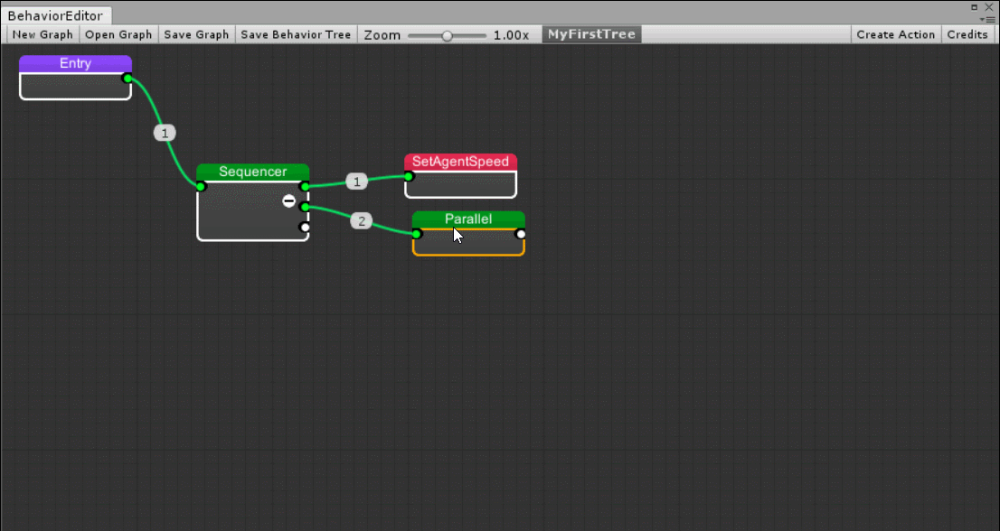
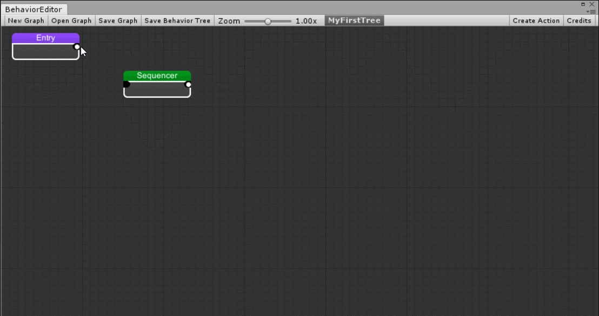

Getting started
Creating BehaviorTree Asset
To Create a new Behavior tree asset, Open the Behvaior editor located on "Window/MoonBehavior/Editor"
-Click on "New" then select "BehaviorTree"

A window will display, put the name and hit "Ok".

Adding nodes
Right click > "Add node" to display the node list

To add it simply click on the item
Search filter: You can Search by name or by category (the blue label)
Moving nodes
You can move nodes holding left click ..

Recursive move holding Shift + left click.

Multi Selection
You can multi select nodes to move or delete just click and drag the mouse on a empty point inside the grid

Connecting nodes
To connect a node to other just click on the output of source node and click the target node to connect it.
Right click on a empty point on the canvas to clear the source output.
Right click on a node input to clear the connection
